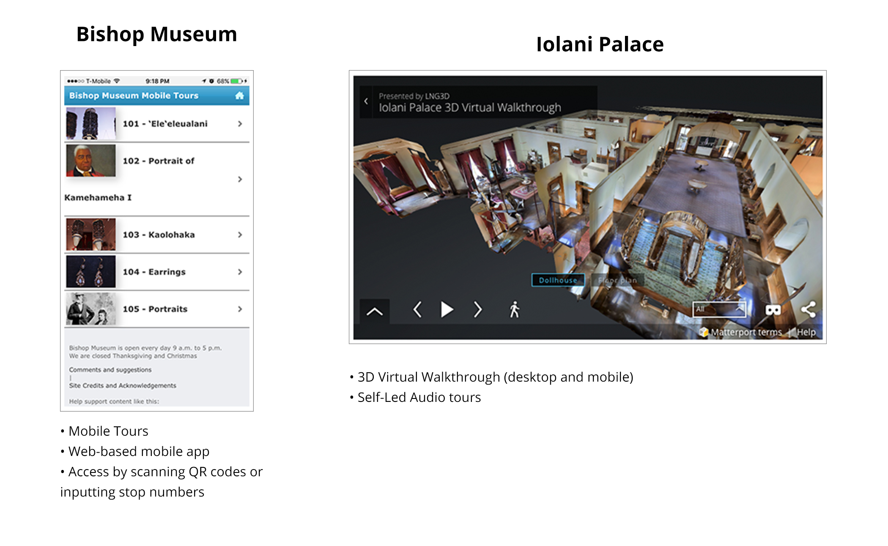
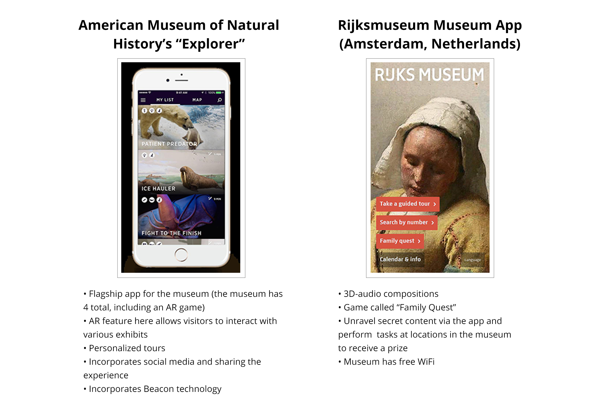

Washington Place is a historic museum in the middle of downtown Honolulu. The building, a Greek-revival style two-story mansion built in 1841, is famous for being the private residence of Queen Lili`uokalani, the last reigning monarch of the Hawaiian kingdom. Since her residence, Washington Place has since been the official residence of all Hawaii governors. Today Washington Place houses artifacts of the Queen and other well-known officials in Hawaii.
Washington Place, built in 1841, sits on a vast green lawn in the middle of downtown Honolulu. The museum was once the private residence of Queen Lili`uokalani, the last reigning monarch of the Hawaiian kingdom. Photo from Washington Place Foundation.
The Callenge
For this project, I was approached by my major advisor at the University of Hawaii at West Oahu, Sharla Hanaoka, who is also the Academy of Creative program director, to create some type of app that incorporated digital technology for the First Lady of Hawaii, Dawn Ige, and Washington Place. This app was scheduled to debut in mid-December 2017 to coincide with the reopening of the museum after a year of construction. I started this project the last week of August 2017. The app planned to feature one of the new exhibits about the first governor of Hawaii, Gov. William F. Quinn.
Sharla had actually met with the First Lady prior to approaching me, where she talked about a few ideas for an app, including incorporating Augmented Reality into the user experience.
Being quite inexperienced with AR (read: no experience at all), on top of being the sole member on the project and primarily experienced in design with only some programming, I was hesitant about promising the AR feature. I told Sharla—who I’d consider to be the project manager in this project—that I would be open to the possibility of AR but would first focus on smaller features that seemed feasible in the time frame.
Research
In order to figure out Washington Place’s position in the local museum market, I researched two of the bigger museums in Hawaii to see what type of digital technology that already existed in Hawaii. The two sites were Bishop Museum and Iolani Palace. While I found that they did not have a native mobile app for visitors, they did have some cool tech outside of the typical museum experience.

I also researched museums on a national and international scale to see how AR was incorporated into existing museum experiences and to evaluate what other museums were doing with technology in general.

From my research I found incorporating AR was very, very ambitious, and still a hot new feature that, within museums, would be able to gamify and add a bit more fun and snaz to the visitor experience. I had concluded that at this point because the museum wasn’t as big in physical size or popularity compared to the Bishop Museum or Iolani Palace, and that because the target audience of Washington Place was kind of a bell-curve of everyone from 7 years to 70 years old, the inclusion of AR could wait. Instead for this phase, a simple app that featured the Gov. Quinn exhibit and inside-stories could suffice for phase 1.
User Pain Points
Below is a persona I made of Jennifer to explore the app’s usage on the day of the museum’s opening.
Through this exercise and a few informal interviews with my peers about their app usages, I discovered the pain points to be that:
Users don’t like downloading apps in order to experience something on site. So what is the alternative? How do we get people to see our app?
Fortunately, the Creative Media department has like 20 iPod touches (the model that’s basically like an iPhone) and we decided on opening day we could lend Washington Place a few of them with the app already loaded. By bypassing the download hurdle in this phase, we could get our app in the hands of our audience much more quickly and easily.
Since the exhibit is a collection of photos on a wall occupying approximately 3x4 feet of space, people won’t have much time view the exhibition, especially on an opening day or a busy day. How can we encourage visitors to continue what they see in person on the app?
To get people to transition from the artifact in real life to the app, we asked the museum curator to provide additional content and inside-stories that could be featured in the app.
On the development side, I noted that a personal pain point was that we did not have a developer devoted to building this, so I was essentially volunteering myself to build this thing. I initially planned to do so with Invision then later decided to build it in Xcode to look a bit more presentable since people invited to the opening would be interacting with the app. That in itself opened up a whole can of worms that I’ll get into later... But I stressed to Sharla that if this project were to continue in the future, we needed to have someone who knew how to build software on our team.
Visual Design
As a part of the research phase, I discovered that Washington Place didn’t really have a brand. So as a part of my discovery process, I created a style to represent the mansion and its significance.
Initially, I chose earthy colors—browns, greens, blues—to represent the museum's nature oasis and to encapsulate its down-to-earth feel in the middle of urban Honolulu. To visualize the museum’s strive for modernity I chose flat values to emulate the flat/material design trend—flat browns, flat greens, and flat blues.
However, after talking with Heather Giugni, a Hawaiian archivist who encouraged me to explore the museum’s personal connection with Queen Lili`uokalani, we shifted to a color palette more representative of Hawaiian royalty to represent the museum’s significance in Hawaiian political history. In Hawaii, rich, saturated golds, reds and purples denote power and aristocracy.
The color purple was specifically chosen to represent the Queen’s favorite flower, the crown flower, which surprisingly looks like a crown. Yellow was chosen to complement purple, and interestly in the center of the crown flower is a tiny yellow bud. Sharla also provided an illustrated crown flower pattern to emulate Hawaiian quilts and act as a texture throughout the visual design.
A combination of serif and sans-serif fonts were used to contrast the idea of old to represent the museum’s history and the new to represent the introduction of digital technology into the museum.
Aurasma - Return of the AR issue
So we’re into about mid-October and my project manager has been doing research of her own. Sharla shared with me Aurasma, an AR software from HP (which was recently rebranded as “HP Reveal” on December 18, 2017), and she really wanted us to incorporate its features into the app flow.
After exploring different ways in which we could incorporate Aurasma, I decided to design the app as a way to experience the Washington Place in two ways, by selecting a particular exhibit, or by scanning artifacts throughout the museum to make stories come to life. Sort of a “choose your experience” theme.
Wireframes
I did a usability test on the row design on the home screen, and the fact that there was just one exhibition there made the next step confusing. To combat this, I played around with the idea of using a prominent CTA button and even adding another row to tell people that these are a list of exhibitions.
Outcome
Below is a video of the Xcode prototype.
Due to the lack of programming skills (and lack of appropriate developer in this phase), the proposed map, “Find on Map”, audio/video features were not deployed in this version. I’m hoping they will become available now that our team is expanding. The scanning tab’s functionality also had to be sacrificed in this version. So to actually use the scanning feature you needed to close the Washington Place app, return to the iOS home screen, and open the Aurasma app. This sacrifice was due to the fact that we couldn’t install the Aurasma SDK into the app. We made sure, however, to make it clear to users via instructions and in-person walkthroughs how to use the two apps in conjunction with each other.
The prototype also ended up including additional artifacts of the Queen that we configured to be scannable with Aurasma. These objects were her clock, her piano, a portrait of her, and a plaque outside the museum. After using Aurasma to scan the object, a video with history about the artifact starts playing.
We debuted the app to the First Lady, Dawn Ige, and Washington Place curator, Cynthia Engle, two days before the reopening of Washington Place (which was on December, 14, 2017). We explained to the them how to use the app since it was still more or less a prototype and the limitation of using the AR Aurasma feature. To my surprise, they loved it. They loved the idea behind the app and how we surpassed expectations by including the AR feature in the user experience.
On the day of the reopening we stationed five of the iPods around the museum near the Queen’s scannable artifacts so people could pick up the iPod and explore. We also went upstairs to demo the scanning at the Quinn exhibit during the official part of the ceremony and talked about the potential of the app to guests.
Reflection
I have to be honest, all throughout the process I was a bit skeptical about finishing the app on time. We thought we would have about a month’s extension about a couple weeks in, but nope, the December date was actually happening. It was also a bit challenging not being able to communicate directly with the client and not getting feedback as much as I wished. There were also issues at the museum with the Wifi being spotty for the Aurasma feature.
On the development side, we didn’t have a developer to chime in throughout the process and see if what I was designing seemed doable. It would have been nice to listen be able to bounce ideas around with someone as well. Building out a prototype was also a bit tricky. Again, we were only deploying this version on five iPod Touches (plus extras to be safe), so I decided I would tackle the task of building a prototype in Xcode and deploy the beta version to the iPods via TestFlight. In retrospect, it was really time-consuming and required a lot of extra work on my part. However, I can’t say I regret doing this as it was a massive learning experience. Actually building the high fidelity prototype in Xcode taught me a number of things:
• It taught me what Xcode was and what its GUI looked like
• I learned a tiny bit of iOS development, and now I can better empathize with iOS developers should I work with them in the future
• I did extensive research on TestFlight and how to upload apps to the App Store
• Why even is saving out app icons such a pain???
Phase 2 of the Washington Place app is ongoing, and the team hopes to incorporate the features that weren’t made available in this phase, including incorporating the AR scanning feature seamlessly into the experience.
Me, First Lady of Hawaii Dawn Ige, Washington Place curator Cynthia Engle, and Sharla Hanaoka at the opening of the Washington on December 14, 2017.
Me with Hawaii Governor David Ige at the opening of the Washington on December 14, 2017.
Next
Drive Electric Hawaii Website
Building a website to educate Hawaii about electric vehicles.